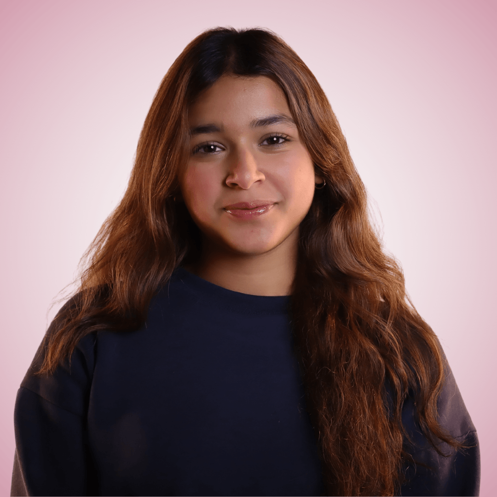

Jia Rastogi, a first-year Uni Student
Hey!, I'm Jia Rastogi. I graduated from NBSC Manly Selective Campus last year, and have now started my degree at UTS in 2026. I'm doing a Bachelor of AI in the Faculty of Engineering and IT, where I can't wait to learn more about this growing industry! Over the past few years, I've developed skills for computing, but there are many other aspirations I have for the future. You can read more about those in the pages on this website, which you can view in the navigation menu above.
